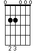
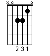
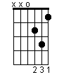
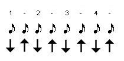
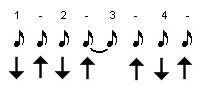

Acordurile Em, Am si Dm
In aceasta lectie vom continua cu un exercitiu pentru intarirea degetelor mainii stangi, vom invata 3 acorduri noi pentru a putea canta mai multe cantece. De asemenea vom avansa in folosirea mainii drepte pentru "strumming".
Gama C (Do Major)
 Poate va intrebati ce este aceea o gama. O gama este o grupare de mai multe sunete distantate intre ele ca inaltimi dupa anumite reguli. Ea reprezinta materialul cu care se lucreaza pentru emiterea de sunete. Un acord totdeauna va fi compus din mai multe sunete ale unei game cantate simultan. Pentru inceput veti invata acordurile pe de rost dar odata cu timpul veti invata si modalitatile de constructie a acestora.
Poate va intrebati ce este aceea o gama. O gama este o grupare de mai multe sunete distantate intre ele ca inaltimi dupa anumite reguli. Ea reprezinta materialul cu care se lucreaza pentru emiterea de sunete. Un acord totdeauna va fi compus din mai multe sunete ale unei game cantate simultan. Pentru inceput veti invata acordurile pe de rost dar odata cu timpul veti invata si modalitatile de constructie a acestora.
Gama C contine urmatoarele note C D E F G A B (do, re, mi, fa, sol, la, si). In exercitiul curent vom canta toate aceste sunete pe prima pozitie a chitarii (adica in stanga de tot). Astfel conform diagramei vom canta fiecare coarda libera (acolo unde vedem "0") si fiecare fret corespondent acolo unde vedem "bulina neagra". Nu uitati de regula din cursul trecut: fretul 1 se canta cu indexul mainii stangi, fretul 2 cu mijlociul, fretul 3 cu inelarul.
Daca analizam diagrama vom canta practic in ordine: E(coarda libera) F G A(coarda libera) B C D(coarda libera) E F G(coarda libera) A B(coarda libera) C D E(coarda libera) F G. Deocamdata atat despre aceasta parte de teorie. Mai tarziu o sa vedem ce inseamna daca am incepe exercitiul de pe o anumita nota si l-am termina pe aceiasi nota.
Exersati lent. La acest moment nu e importanta viteza ci acuratetea. Este foarte important ca sunetul sa fie clar. Astfel pe masura ce exersati mai mult si cand veti folosi acorduri acestea vor suna din ce in ce mai clar.
Sa continuam cu invatarea a 3 noi acorduri:
Acordul Em (Mi minor)
In lectia trecuta am invatat 3 acorduri "majore" G, C, D. Poate va intrebati ce inseamna "major" si "minor". Acesti doi termeni dau o calitate a acordului. Pentru inceput ca o regula babeasca retineti ca acordurile majore imprima un sound mai vesel, iar cele minore un sound mai trist.

Em probabil ca este cel mai simplu acord de chitara.
Dupa cum vedem in diagrama alaturata, folosim doar doua degete (2 si 3) iar restul corzilor sunt lasate libere. Exersati luarea acordului cum am invatat data trecuta. Daca acordul nu suna bine, incercati sa ciupiti fiecare coarda pe rand, iar acolo unde nu suna bine miscati degetul mainii stangi pana cand o faceti sa sune bine. Cu timpul totul va deveni natural.
Acordul Am (La minor)
 Acest acord este si el relativ simplu. Asa cum ne-am obisnuit in lectia trecuta, am avut intai un acord cu 6 corzi (Em) acum o sa avem unul cu 5 corzi (Am). Pentru aceasta urmariti diagrama si folositi degetele conform descrierii. Pentru strumming ciupiti doar primele 5 corzi (adica fara cea de sus). Aceleasi reguli raman in picioare: daca nu suna bine vedeti care dintre corzi strica acordul si corectati pozitia.
Acordul Dm (Re minor)
 Acest acord este si el relativ simplu. Asa cum ne-am obisnuit in lectia trecuta, am avut intai un acord cu 6 corzi (Em) acum o sa avem unul cu 5 corzi (Am). Pentru aceasta urmariti diagrama si folositi degetele conform descrierii. Pentru strumming ciupiti doar primele 5 corzi (adica fara cea de sus). Aceleasi reguli raman in picioare: daca nu suna bine vedeti care dintre corzi strica acordul si corectati pozitia.
Tehnici pentru mana dreapta
Gata am vorbit destul despre mana stanga, acum mai invatam cate ceva pe mana dreapta. In primul rand pe fiecare numar din lectia trecuta (1,2,3,4) mai adaugam strumming-ul in sus. Astfel incat sablonul devine:
jos, sus, jos, sus, jos, sus, jos, sus.

In diagrama din stanga avem exact acest lucru: sageata in jos inseamna ca vom face strumming de sus in jos, iar cealalta invers.
Acest lucru devine mai clar in filmuletul ajutator.
Aceste tehnici de mana dreapta sunt la fel de importante. Daca stapaniti bine aceste lucruri, din doar doua acorduri si un sablon de strumming interesant poate iesi o melodie senzationala. Aceste sabloane practic imprima ritmul melodiei si de multe ori pot face diferenta.

Astfel sa ne "jucam" putin cu acest sablon modificand unul din timpi. Dupa cum observati in diagrama alaturata sageata de pe timpul 3 a disparut. Asta inseamna ca noi facem miscarea de mana dreapta dar pe deasupra corzilor (nu le atingem). O sa fie un pic tricky acest ritm, dar isi va da roadele. Din momentul in care stapaniti acest ritm melodiile pot incepe sa fie privite ca melodii si nu doar ca exercitii pentru exersarea acordurilor.
In continuare vom exemplifica folosirea acestor acorduri in cateva cantecele romanesti si unul strain asa cum ne-am obisnuit.
Link-uri cu tabulaturile melodiilor cantate:
Mihai Margineanu - A fost odata
Bambi - Doi ochi caprui
Stefan Banica Jr - Poveste
Metallica - Fade to Black